Examples#


Tricky issue when converting CountVectorizer or TfidfVectorizer
Tricky issue when converting CountVectorizer or TfidfVectorizer
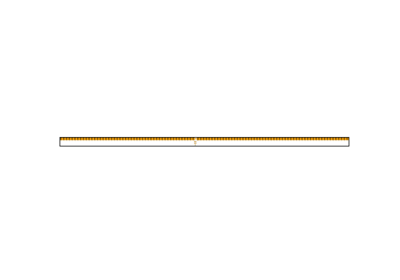
Train and deploy a scikit-learn pipeline
Train and deploy a scikit-learn pipeline

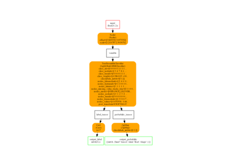
Convert a pipeline with a LightGBM classifier
Convert a pipeline with a LightGBM classifier
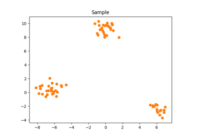
What is the opset number?
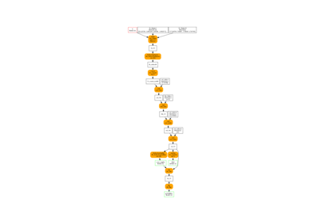
Black list operators when converting
Black list operators when converting

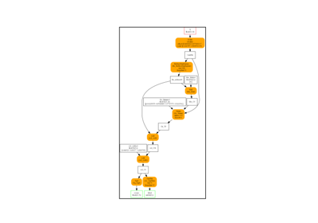
Intermediate results and investigation
Intermediate results and investigation
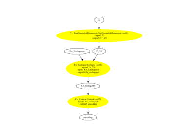
Converter for WOE


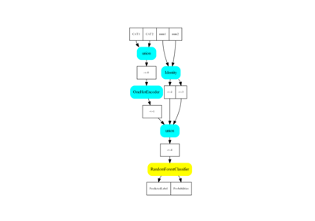
Dataframe as an input
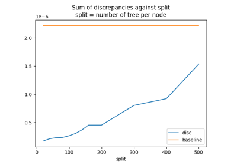
Convert a pipeline with a LightGBM regressor
Convert a pipeline with a LightGBM regressor
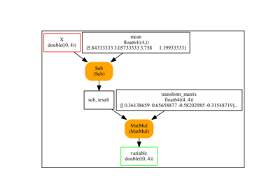
Implement a new converter using other converters
Implement a new converter using other converters
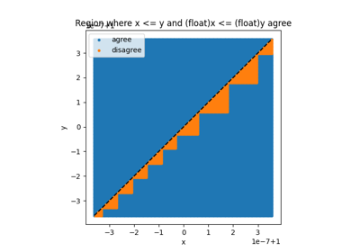
Issues when switching to float
Issues when switching to float

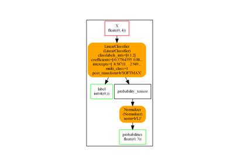
One model, many possible conversions with options
One model, many possible conversions with options
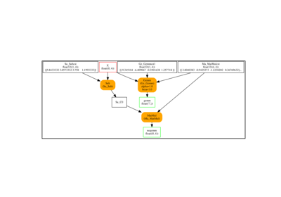
Change the number of outputs by adding a parser
Change the number of outputs by adding a parser

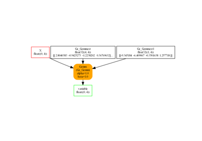
A new converter with options
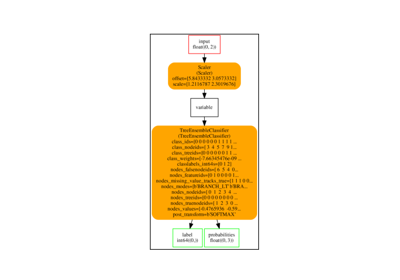
Convert a pipeline with a XGBoost model
Convert a pipeline with a XGBoost model
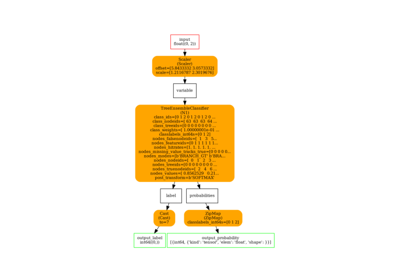
Convert a pipeline with a CatBoost classifier
Convert a pipeline with a CatBoost classifier
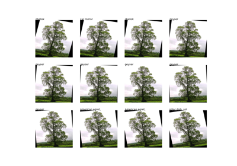
Transfer Learning with ONNX
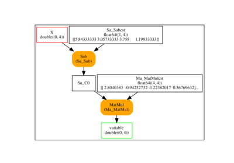
Implement a new converter


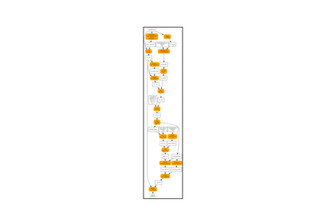
Fast design with a python runtime
Fast design with a python runtime